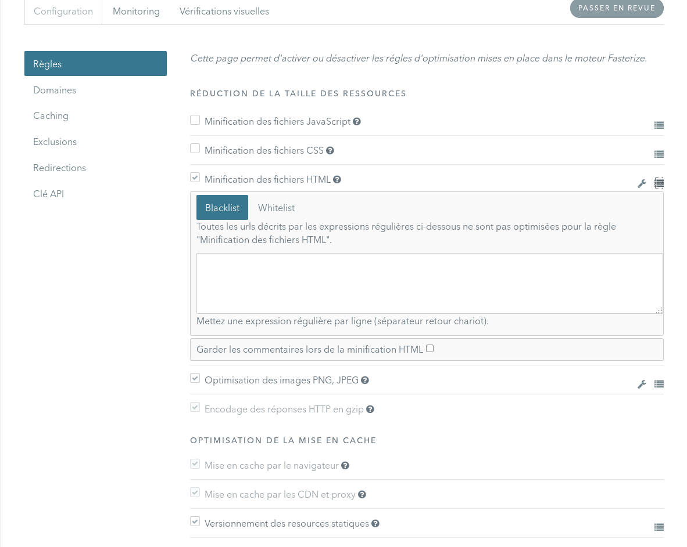
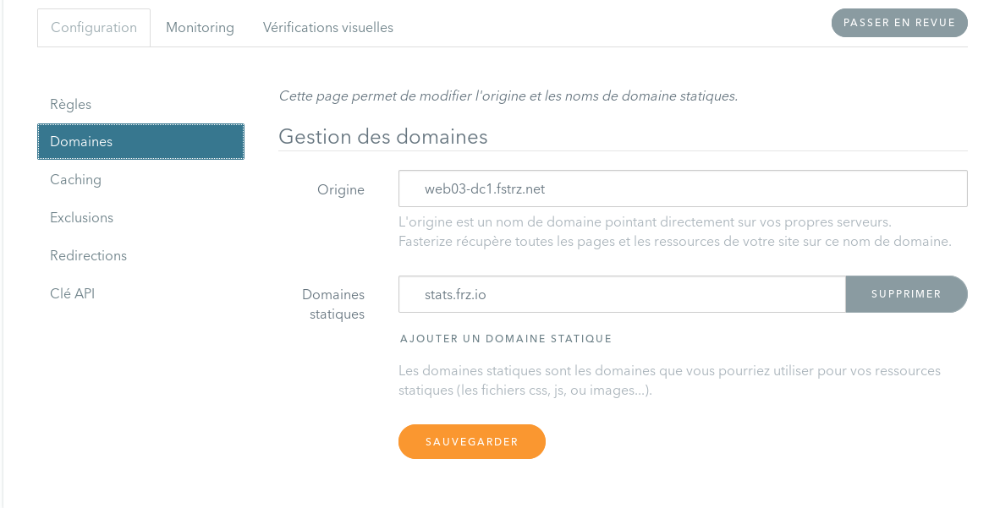
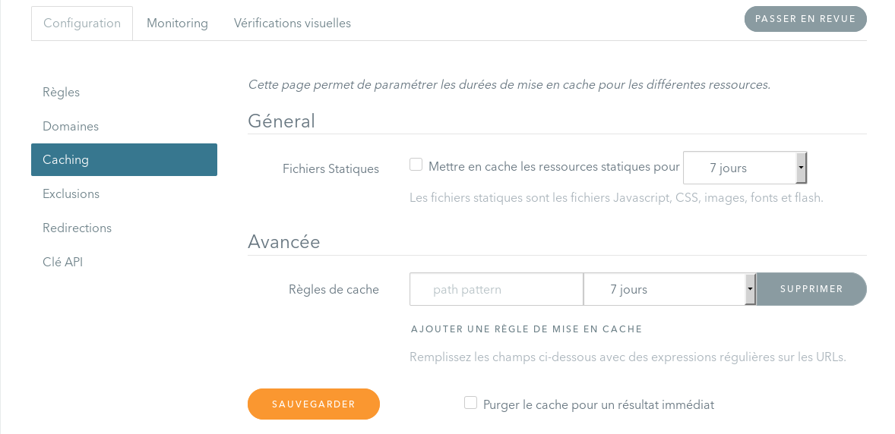

Formation
client
Présentation Générale
Fonctionnement général

Noms de domaine
(automatiquement créés)
- fasterized.com
- par défaut pointe sur la plateforme (mode démo)
- si une config existe, pointe sur la plateforme ou sur l'origine
- fasterized.net
- pointe toujours sur la plateforme
- fasterize.it
- pointe sur les serveurs d'origine
- s0.frz.io / s1.frz.io
- domaines "shardés", utilisés pour les objets statiques
- pointent sur la plateforme ou un CDN
les règles d'optimisation
Moins de requêtes
Des requêtes et réponses moins lourdes
Des objets chargés différemment
Et d'autres fonctionnalités...
- Versionning automatique des URLs
- Redirection automatique des mobiles et tablettes sur des URLs spécifiques
Tour de l’interface
Dashboard
- Liste des configurations du compte
- État du branchement des configurations
- État des optimisations des configurations
- Instructions de branchement des configurations
- Flush du cache des configurations
- Arrêt des optimisations des configurations
Dashboard du compte

Configuration
Permet de configurer :
- Règles
- Domaines
- Cache
- Exclusions
- Redirections
En mode avancé
- Tracking de performance Fasterize & widgets
- A/B Test
Configuration : règles
- Activation/désactivation des règles
- Options possibles : icône
- Exclusion d'URL pour une règle : icone
Configuration : règles
Configuration : domaines
- Configuration de l'origine
- Ajout de domaines secondaires (objets statiques)
Configuration : domaines
Configuration : cache
Redéfinition des règles de mise en cache pour une URL
Configuration : exclusions
- Permet de ne pas optimiser une ou plusieurs URL.
- Exemples : backoffice, tracking, ajax
- Permet de configurer des URL à ne pas modifier dans une page HTML.
Configuration : Redirections
- Redirections des mobiles et/ou tablettes vers un autre site.

Comment identifier et corriger un problème ?
Une page est cassée
Une page est cassée
Utiliser les paramètres de debug dans l'URL :
?frz-all=falsepour tout désactiver sur une page?frz-[rule]=falsepour désactiver une règle sur une page?frz-[rule]-[option]=falsepour désactiver une option d'une règle sur une page?frz-persist-[rule]=falsepour désactiver une règle sur une page et sur la session- Liste des règles ici
Une page est cassée
- Activer / Désactiver des règles
Les règles qui posent problème sont en général
- DeferJS
- Concaténation
- Minification
- Lazyloading
Les règles peuvent être désactivées pour des pages données ou globalement
- Exclure une (ou plusieurs) URL(s) qui pose(nt) problème au niveau global
Impossible de se connecter à la console d'admin Prestashop
Ma solution d'analyse comportemental ou detection de fraude n'arrive plus à récupérer l'IP des clients
Toutes les requêtes arrivant sur vos serveurs auront comment IP client celles de Fasterize. Fasterize recopie l'IP des clients dans le header HTTP X-Forwarded-For
Une page d'erreur s'affiche : 'Couldn't find origin server...'
Tous les alias pointant sur le site doivent être configurés dans Fasterize, dans le cas échéant nous ne pouvons résoudre l'origine. Cela peut également arriver si vous venez de procéder à une migration de vos serveurs et que l'IP de votre origine a changé
- Rajouter tous les alias dans la configuration des domaines
- Vérifier l'origine dans la configuration des domaines
Les images sont trop dégradées
Certaines images, notamment certains dégradés, peuvent subir une modification trop visible
- Exclure les images concernées en les mettant en blacklist de la compression d'image
- Exclure les images concernées de façon globale
- Désactiver l'option de compression aggressive des PNG
- Augmenter la qualité des images compressions
- Désactiver la compression des images
La plateforme fasterize est down...
- Les requêtes sont redirigées automatiquement sur l'origine
- Consulter http://status.fasterize.com/ pour suivre l'état de la plateforme en temps réel
Et si vous ne vous en sortez pas...
Contacter le support par mail à support@fasterize.com
Contacter le support également pour :
- Prévenir d'une refonte du site
- Prévenir d'une expiration du certificat SSL
- Prévenir d'une migration de serveur (changement d'IP ou nom de domaine origine)